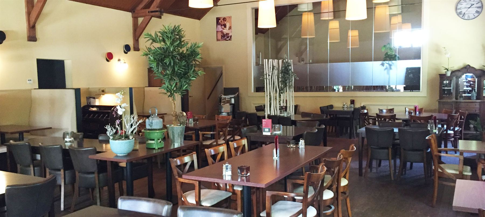

Feesten en buffetten
Onze locatie leent zich uitstekend voor feesten en warme en koude buffetten. De zaal heeft ± 90 zitplaatsen; voor kleinere gezelschappen kunnen we een gedeelte afscheiden als privé stuk.
De zaal heeft een podium, ideaal voor levende muziek op uw feest, en een houten vloer waar een dansje op gemaakt kan worden. Daarnaast is er een met een glaswand afgesloten gedeelte met ± 30 zitplaatsen, voor een intiemer feest of etentje.